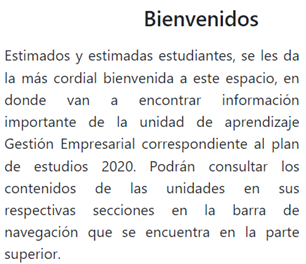

Manual de usuario
A continuación se mostrará el Manual de Usuario del sitio, si desea descargar el manual, puede hacerlo en el siguiente enlace:
Manual de usuario
En caso de que no se despliegue correctamente el Manual de Usuario, a continuación estará la información del manual para visualización sin problemas.
INTRODUCCIÓN
La Escuela Superior de Cómputo (ESCOM) del Instituto Politécnico Nacional (IPN) ha creado un espacio digital dedicado a la
unidad de aprendizaje "Gestión Empresarial" correspondiente al plan de estudios 2020. Este espacio está diseñado para
proporcionar a los estudiantes toda la información y recursos necesarios para su formación académica en esta área.
I.I Organizaciones.
I.II Administración.
I.III Gestión empresarial
I.IV Diferencias entre gestionar y administrar.
Este recurso didáctico cuenta con los siguientes apartados que lo componen:
- Inicio.
- Información de las profesoras involucradas en su elaboración.
- Unidad 1.
- Fuentes de consulta.
- Glosario.
Sección guía.
Navegación:
La página cuenta con una barra de navegación ubicada en la parte superior. Esta barra es esencial para moverse a través de las diferentes secciones y contenidos de la unidad de aprendizaje. A través de ella, los estudiantes pueden:
- Acceder a los contenidos de las diferentes unidades.
- Consultar el Inicio, la información de las profesoras, los temas de la unidad1, fuentes de consulta y el glosario.
Imagen 1. Menú superior de la página.
Así mismo, al acceder al apartado de Unidad 1, encontraremos un menú del lado izquierdo de la pantalla, el cual nos permitirá acceder a los componentes de cada tema que constituye a la misma.
Imagen 2. Menú lateral.
Inicio:En este apartado encontraremos la bienvenida y guía de la asignatura.
Imagen 3. Inicio.
Bienvenida:Al acceder a la página, los estudiantes son recibidos con un mensaje de bienvenida. Este mensaje resalta la importancia de este espacio como herramienta de aprendizaje y fuente de información para la unidad.
Imagen 4. Bienvenida.
Guía de la Asignatura
Además de los contenidos de las unidades, el material didáctico ofrece una guía detallada de la asignatura. En esta encontraremos los siguientes puntos:
- Intención educativa.
- Metodología.
- Unidad de competencia.
- Propósito de la unidad de aprendizaje.
- Evaluación.
- Introducción a la gestión empresarial.
Imagen 5. Guía de la asignatura.
Encontraremos los puntos anteriores organizados con una herramienta llamada Genially, por lo tanto, podremos interactuar con ellos presionando en donde veamos el siguiente símbolo:
Imagen 6. Símbolo para interactuar con la información.
Conócenos.
En este apartado se encuentra la información correspondiente a las profesoras involucradas en el desarrollo de este recurso didáctico, y podemos acceder a este en la barra superior.
Imagen 7. Apartado de "conócenos".
Unidad 1.
Aquí encontraremos los siguientes temas y subtemas.
I.I Las organizaciones.
I.I.I Clasificación.
I.I.II Constitución legal.
Evaluación del tema.
Actividad 1.
I.II Administración.
I.II.I Objetivo de la administración.
Evaluación del tema.
Actividad 2.
I.III Gestión empresarial.
I.III.I Objetivo de la gestión empresarial.
I.III.II Funciones básicas.
I.III.III Clasificación.
Evaluación del tema.
Actividad 3.
I.IV Diferencias entre Administrar y Gestionar.
Evaluación del tema.
Actividad 4.
Para acceder a estos únicamente necesitamos dar clic en los temas o subtemas deseados, de esta manera
se desplegará la información perteneciente al mismo.
Imagen 8. Tema I.I las organizaciones, seleccionado en el subtema I.I.I "Clasificaciones".
Recursos Multimedia.
En algunas secciones de la página, los estudiantes podrán encontrar videos, infografías y otros recursos multimedia que complementan la teoría presentada. Estos recursos buscan enriquecer la experiencia de aprendizaje y ofrecer diferentes perspectivas sobre los temas tratados.
Imagen 9. Otros recursos.
Herramientas de Evaluación:
Dentro de la plataforma, los estudiantes tendrán acceso a diferentes tipos de evaluaciones, desde cuestionarios en línea hasta proyectos y tareas que pueden ser enviadas digitalmente. Estas herramientas permiten a los docentes medir el avance y comprensión de los estudiantes sobre la materia.
Imagen 10. Evaluaciones de la unidad.
Fuentes de consulta.
Aquí encontraremos todas aquellas fuentes bibliográficas de donde se obtuvo información, para acceder a este apartado debemos dar clic en la barra de navegación superior.
Imagen 11. Fuentes de consulta.
Glosario.
En este apartado encontraremos una definición de las palabras que se ocupan dentro del recurso didáctico.
Imagen 12. Glosario".
Recomendaciones para el Uso de la Página.
Interacción: Se recomienda a los estudiantes participar activamente en las actividades interactivas de cada
unidad y de la misma en las evaluaciones.
Feedback: Si los estudiantes encuentran algún error o tienen sugerencias para mejorar la página, es importante
comunicarlo a los responsables del curso.
Usabilidad: Se recomienda al alumno que utilice el recurso didáctico como una herramienta en el estudio, no
como una evaluación total del curso.
Sección de Preguntas Frecuentes (FAQs).
¿Debo registrarme para acceder al recurso?
R: No, puedes acceder al recurso sin necesidad de registrarte en ningún sitio.
¿Las evaluaciones en el recurso afectan mi calificación de la unidad de aprendizaje?
R: Si, las evaluaciones serán parte de la evaluación.
¿Debo estar cursando la unidad de aprendizaje para acceder al recurso dinámico?
R: No, puedes acceder al recurso, aunque aún no curses la unidad de aprendizaje.
¿Es necesario saber de gestión empresarial para entender el recurso dinámico?
R: No, no es necesario tener conocimientos previos.
Glosario de términos.
Navegación. Es la manera en la que un usuario puede ir pasando de página en página en internet, para encontrar aquello que busca o algo que sea de su interés [1].
Gestión empresarial. La gestión empresarial o management se define como el proceso que dirige y guía las operaciones de una organización para hacer realidad los objetivos establecidos. Es decir, esta área de actuación se encarga de organizar todos los recursos existentes para diseñar y poner en marcha acciones que permitan alcanzar las metas de la empresa [2].
Click. Se asocia específicamente a la acción de pulsar un botón de un mouse (ratón), el periférico que se utiliza para dar instrucciones a una computadora (ordenador) [3].
Genially. Genial.ly es una herramienta online para la creación de "recursos interactivos" [4].
Referencias.
[1] "Qué es la navegación web y cómo mejorarla en tu sitio". Blog de HubSpot | Marketing, Ventas, Servicio al Cliente y Sitio Web. Accedido el 24 de octubre de 2023. [En línea]. Disponible: https://blog.hubspot.es/website/que-es-navegacion-web
[2] Santander Universidades. “¿Qué es la gestión empresarial? Claves del management en 2022”. Accedido el 24 de octubre de 2023. [En línea]. Disponible: https://www.becas-santander.com/es/blog/gestion-empresarial.html
[3]J. P. Porto y A. Gardey. “Click - definicion.de”. Definición.de. Accedido el 24 de octubre de 2023. [En línea]. Disponible: https://definicion.de/click/
[4] “Genial.ly”. Google Chrome - The Fast & Secure Web Browser Built to be Yours. Accedido el 25 de octubre de 2023. [En línea]. Disponible: https://chrome.google.com/webstore/detail/genially/pgcnmppepanemnlhlcpiokadehlbegma?hl=es